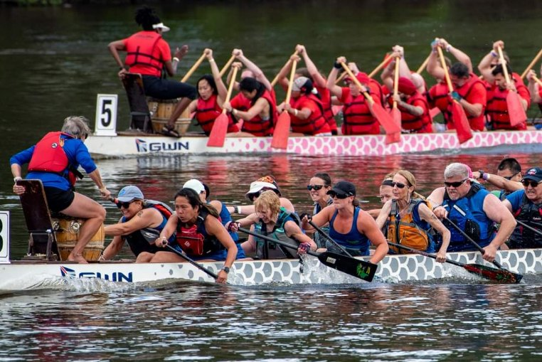
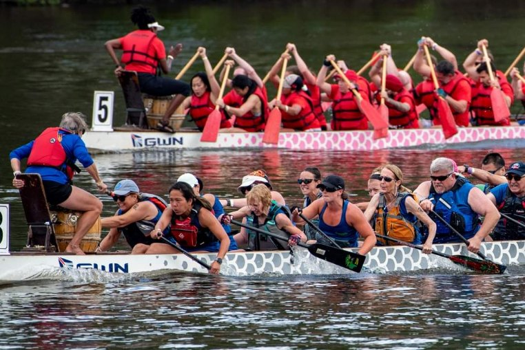

Welcome!
I'm Happy You're Here
I'm truly glad you've found your way to my little corner of the internet. Whether we know each other already or you're just stopping by for the first time - welcome! This site is a reflection of the things I care about, the work I'm proud of, and the journey I'm on. Feel free to explore at your own pace, and I hope something here sparks inspiration, curiosity, or connection.
Thank you for being here!

 
